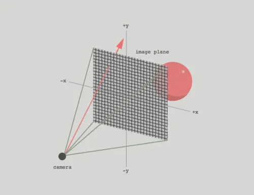
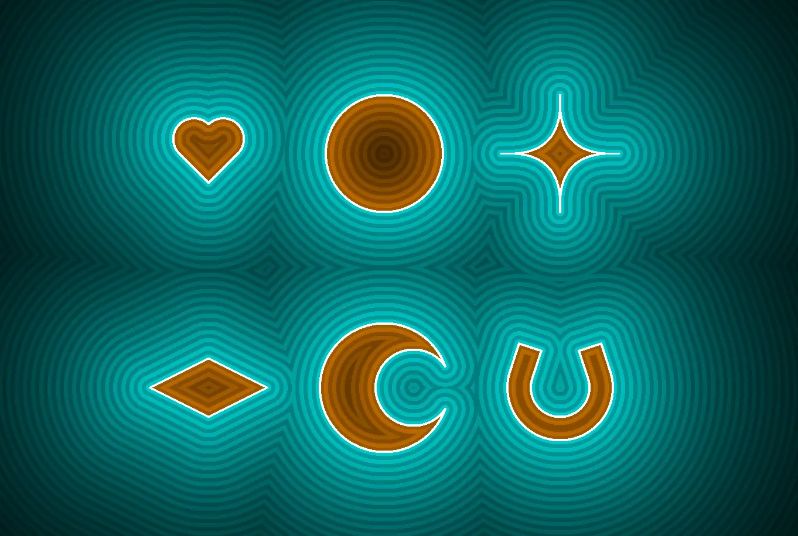
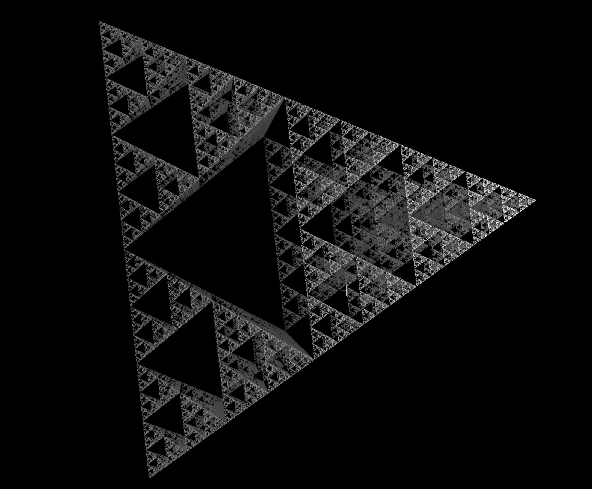
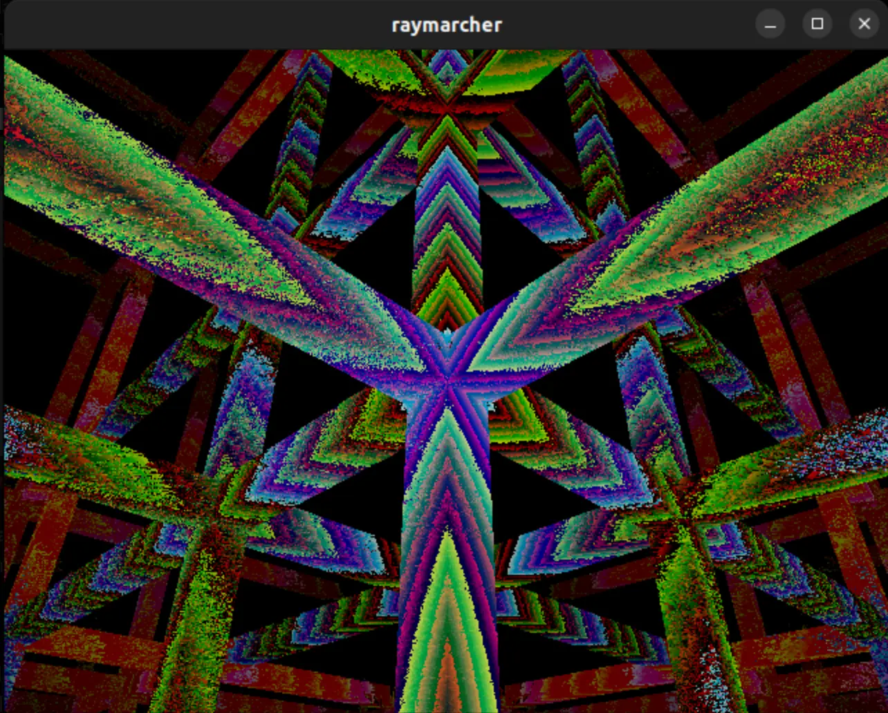

Audio Reactive Visualizations Using Machine Learning and a Custom Raymarching GPU
By Michael Crum (mmc323) and Antti Meriluoto (ahm234)
Introduction
In a tradition as old as time, sights and sounds are often paired together to induce emotion in the observer. Incredible reactions can be created with careful pairings of the two, although the exact relation between image and audio is, as with many things distinctly human, difficult to pin down precisely. Of course, this difficulty only seems to make the challenge more appealing to creatives, scientists, and all varieties of people in between.
For our final project, we chose to attempt a unique approach to the problem, utilizing the skills and tools we learned during the class to create visual interpretations of songs. We used machine learning to extract emotional meaning from the music, which in turn impacted the ray marched visuals generated on the FPGA. In this write-up, we will summarize the various techniques used to realize our final product.
Results
Although it’s somewhat unconventional to show results at the beginning of the write-up, seeing the final product might help you visualize what we’re going on about in the following sections.
I’ll insert pictures/videos here in the final website
Sentiment Analysis
section in progress
FPGA-Based Raymarching GPU
Background
The ray marching algorithm
For brevity, this section will offer an abridged description of the raymarching algorithm. If you wish to learn more about the algorithm, Michael has written a full article about it on his website (with pretty demos too!).
Raymarching is a form of physically based rendering: rendering techniques that model the interaction of lights and physical objects to emulate real-world vision. Because emulating billions of photons emitted from light sources is intractable, physically based rendering techniques instead work backward to trace the path of photons that ultimately end up hitting the camera (or eye, depending on how you prefer to think of it).
At a base level, the goal of rendering is to assign a color to each screen pixel. Think of your screen as a window. Through the window is the scene we wish to render, made up of simple shapes. The screen/window can be quantized by its pixels, each specifying a unique coordinate on the window. For light from the scene to enter your eye, it must pass through one of these pixels in the window. Suppose we calculate the vector from your eye through each pixel on the window. We can then use this vector to work backward and determine information about the photons that would enter through that pixel. From this information, we can determine the color of that pixel. Figure X visualizes this process for one pixel.

Figure X: From pixels to rays (Credit: Michael Walczyk)
The process is well-researched in computer graphics and is computed using the inverse camera projection matrix. For our virtual camera, this operation boils down to just a couple of operations:
vec2 xy = coordinate.xy - resolution.xy / 2.0;
float z = resolution.y / tan(radians(FIELD_OF_VIEW) / 2.0);
vec3 view_direction = normalize(vec3(xy, -z));
With per-pixel rays calculated, we can begin tracing them backward into the scene. The first challenge is determining where a ray intersects the scene. One approach is to analytically compute the ray-scene intersection. This is the basis of ray tracing, but this computation is expensive and scales poorly with the scene's complexity. For use on the resource-constrained FPGA, we need to be a bit more clever.
Enter ray marching, an iterative solution for computing ray-scene intersections. The key abstraction of the ray marching algorithm is the signed distance field (SDF). An SDF is a function that takes in a point in space and returns the distance from the point to a scene. To illustrate the concept I will use 2D SDFs, but they trivially extend to 3D space. The simplest 2D SDF is a circle located at the origin. The calculation is trivial:
return length(point) - radius;
Such distance functions exist for all manner of primitives, both 2D and 3D (see Figure X).

Figure X: Raymarched primitives
Ray marching leverages SDFs to know how far it can safely step along a ray without intersecting with the scene. The process is as follows:
- Set point
at the camera origin. - Evaluate SDF to find minimum distance
from the scene. - If
(some small number), you’ve hit the scene - Else continue
- If
- Step
units along the ray, ie - Goto 1
It's important to notice that step 3 is guaranteed to not set
Figure X: 2D ray marching demo
SDFs of multiple objects can be combined simply by taking the minimum of their individual SDFs. Similar operations exist for intersection and difference. SDFs can also be deformed to scale, rotate, twist, and repeat the SDF throughout space. I won’t go over all of the operations here, but I’ll leave this excellent reference on the topic.
Ray marching outperforms ray tracing in situations where SDFs are more efficient to compute than analytic intersections. Being an iterative solution, it is also well suited to be broken up into multiple clock cycles on the FPGA. Notice also that each pixel is computed completely independently, perfect for massive parallelization. This is the exact purpose of a GPU and the reason they are so valuable for graphical applications.
Floating point and vector math on an FPGA
To have any hope at running the ray marching algorithm, we need a fractional representation that will run on the FPGA. The traditional solution to this problem is using a fixed-point representation, but this comes with trade-offs either in magnitude or precision. Because ray marching operates over a wide range of magnitudes, fixed-point was off the table. We instead decided to use the 1.8.18 floating-point implementation written by past students and improved by Bruce Land. This gives an impressive range both for low-magnitude precision, important for normalized vectors, and high-magnitude representation, important for rendering objects at long range.
To simplify many repeated operations in our Verilog, we wrote a vector math library utilizing floating point math. The library can be found in vector_ops.v in the appendix and includes dot products, scalar multiplication, addition, and 3x3 matrix multiplication.
Prototyping and verification
Before launching into a full Verilog implementation, we created a reference implementation in GLSL (OpenGL Shading Language). GLSL is a C-like language specifically for writing shaders (programs that run per pixel on the GPU). The GLSL implementation is only 100 lines and can be found in the appendix under fractal frag. We used this reference implementation to render the Serpinski pyramid fractal (Figure X).

Figure X: Serpinski pyramid rendered with GLSL
After verifying the GLSL design, we moved on to Verilog. Because compiling code for the FPGA takes many minutes, we looked for a simulation tool that could show VGA output without lengthy Quartus compile times. We found the tool Verilator, which compiles Verilator source code into multithreaded C++ object files. The Verilated source code can then be linked against and the output of the model can be passed into any C++ functions of our choosing. We used SDL to render the output VGA of our model directly to a screen buffer, which can then be rendered into a window. This webpage from Project F was a great resource for setting up the system. Simulating this way allowed us to render 2-3 frames per second, far from real-time but many times faster than a full Quartus compile. Using this strategy we were able to quickly iterate on the design and fix bugs many times more efficiently than in previous labs. See Figure X for an example of Verilated VGA output.

Figure X: Ray marched output rendered with SDL
Architecture
Our ray-marching GPU uses a pipeline architecture to concurrently calculate dozens of pixels simultaneously.
The first step for any pixel is calculating its corresponding ray using the equations detailed in the background section.
From there, the pixel and ray components are passed into the first ray-marching core.
Each ray marching core is responsible for one iteration of the ray marching algorithm.
Because the algorithm itself takes up multiple clock cycles and the SDF evaluation can take up many more, the entire core operates as a long pipeline.
One pixel/ray combo is passed in per clock cycle, and, once per clock cycle, the core spits out the same pixel and ray information coupled with a new value of
Figure X: Simplified pipeline architecture
The number of cores that can be chained together is dependent on the available hardware on the FPGA. Because calculating more complicated SDFs takes additional hardware, the number of stages is also inversely proportional to the complexity of the scene. For simple scenes (e.g. a single cube), up to six cores can be chained together. This drops to three or even two for more interesting scenes and quickly becomes detrimental to the quality of the rendering. Truthfully, even a six-iteration ray marcher offers subpar rendering results, as shown in figure X.
Figure X: A cube rendered with six iterations
To fix this issue, the architecture had to be revised to allow pixels to reenter the pipeline if they need further refinement. With this strategy, each pixel/ray is evaluated in the last core to see if it has intersected the scene. If it has, a new pixel is pushed into the pipeline and a global pixel index is incremented to represent the next pixel in line. If it has not intersected with the scene yet, it is fed back into the first core, and the pixel index is not incremented. This way pixels can take multiple rides through the pipeline according to their needs.
Figure X: Updated pipeline architecture
This architecture provides an unbounded number of iterations to the pixels that need them, allowing for much crisper and more detailed renders. It also provides a variable refresh rate, where low-effort pixels can continue getting rerendered while high-effort pixels render more slowly in the background. This gives the illusion of snappy responsiveness during camera movement while allowing for high detail on close inspection. As a final benefit, it allows for high-complexity scenes that would otherwise get clipped by the low iteration count.
Implementation
With the floating point and vector math libraries implemented, the Verilog was largely the same as the GLSL, with the major exceptions of pipeline and display buffer handling.
Pipelining refers to breaking up a complex operation into steps that can be spread out over multiple clock cycles. Each step runs independently, however, and each step can be busy working on a different input at the same time. This means that data is output as quickly as it is input, save for a delay for the first input to reach the end of the pipeline.
While writing pipelined code, synchronization is extremely important. Imagine we have some function, add(), that takes a clock cycle to complete. You additionally have three inputs, x, y, and z. To sum the three numbers, you may naively write:
a = add(x, y)
b = add(a, z)
However, this will give you the wrong result. Let xn represent the input for variable x on clock cycle n. On clock cycle 2, a will be the sum of x1 and y1 because of the latency the add function creates. However, z will be z2, the input from the current cycle, resulting in b being the sum of x1, y1, and z2. If the pipeline is being used efficiently, z1 is not equal to z2 and the operation will fail. Instead, a pipeline register for z must be introduced to artificially keep z at the same pace as x and y.
In the code for the GPU, you will often see blocks that look like this:
reg [9:0] pixel_x_pipe[PIPELINE_STAGES:0], pixel_y_pipe[PIPELINE_STAGES:0];
always @(posedge clk) begin
pixel_x_pipe[0] <= pixel_x;
pixel_y_pipe[0] <= pixel_y;
end
genvar i;
generate
for (i = 0; i < PIPELINE_STAGES; i = i + 1) begin : g_ray_pipeline
always @(posedge clk) begin
pixel_x_pipe[i+1] <= pixel_x_pipe[i];
pixel_y_pipe[i+1] <= pixel_y_pipe[i];
end
end
endgenerate
We use these blocks to generate pipeline registers of a length controlled by the PIPELINE_STAGES parameter. The code can then write and read values from the registers at relevant pipeline latencies. This greatly reduces the mental overhead associated with keeping track of pipeline synchronization and allows us to debug the pipeline length by tweaking a single value.
For the display buffer, we utilized M10K memory to hold a 10 bit color representation for each pixel.
The other details in the code are better explained through the detailed comments we’ve left in the codebase, which can be found on Michael’s GitHub page.